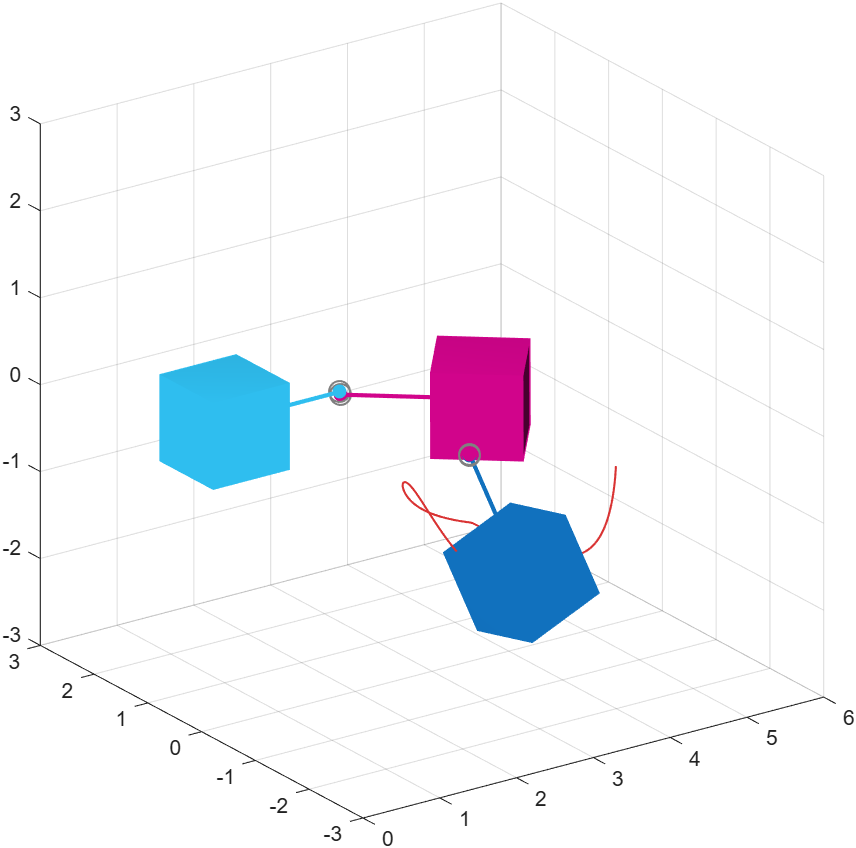
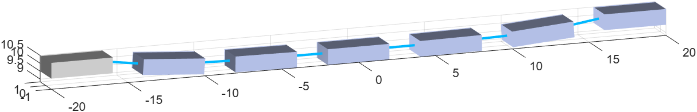

Connecting bodies with constraints and elastic links
Joints connect two bodies and restrict their relative motion. They are created by writing
phx.TypeJoint(bodyA, bodyB, …); the attachment points
are given in the local coordinates of each body (PointA,
PointB).
| Joint | Degrees of freedom | Use |
|---|---|---|
| FixedJoint | 0 — rigid connection | Gluing two bodies together. |
| RevoluteJoint | 1 — rotation about an axis | Hinge, pin, pendulum (AxisA,
AxisB). |
| PrismaticJoint | 1 — translation along an axis | Slider, rail, piston (sliding axis is the local X of the joint frame). |
| SphericalJoint | 3 — rotation about all axes | Ball joint. |
| GearJoint | velocity coupling | Gear train with a Ratio. |
| GenericJoint dev | 6 — with limits | General constraint with translation/rotation limits. |
clf; view(3); axis equal; grid on; camlight headlight; A = phx.Body("Type", "static", "Position", [1 1 0], "Shape", {"Box"}); B = phx.Body("Position", [4 1 0], "Shape", {"Box"}); C = phx.Body("Position", [4 -2 0], "Shape", {"Box"}); % a hinge between A and B phx.RevoluteJoint(A, B, "PointA", [1.5 0 0], "PointB", [-1.5 0 0]); % a ball joint between B and C phx.SphericalJoint(B, C, "PointA", [0 -1.5 0], "PointB", [0 1.5 0]);

phx.Trace). See phxex_joints.phx.Spring links two bodies with an ideal spring and a damper. You
set the stiffness (Stiffness), damping
(Damping) and attachment points. The force can even be visualized
in color.
clf; view(3); axis equal; grid on; camlight headlight; boxes(1) = phx.Body("Type", "static", "Position", [-18 0 10], "Shape", {"Box", "Size", [4 2 1]}); for i = 2:7 boxes(i) = phx.Body("Position", [(i-1)*6-18 0 10], "Shape", {"Box", "Size", [4 2 1]}); phx.Spring(boxes(i-1), boxes(i), "Stiffness", 3e5, "Damping", 2e3, ... "PointA", [2 0 0], "PointB", [-2 0 0], "Colormap", "jet"); end boxes(end).Type = "static"; % anchor the far end too

phxex_springs.phx.Rope connects two bodies with an inextensible rope that can be routed over pulleys — hoists, tackles and counterweights. For more complex couplings there is phx.GenericSpring dev (a spring/damper on all 6 axes with limits).